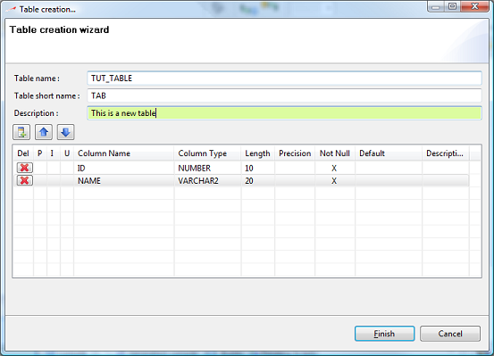

You can create a database table by 4 ways :
From any container by right-clicking and selecting the Create table menu item
From a container by selecting it in the version navigator and click the Create table icon from the toolbar
From the Tables typed node by right-clicking it and selecting the Create table menu item
From a diagram by selecting the Create a database table tool from the diagram editor's palette.
The table editor looks like this :

You can define the table name, short name and description. The short name will be used to name unique and foreign keys appropriately and the description is only for documenting your model.
You can add, reorder or modify the table's columns from the columns table and its toolbox. Simply click in a table's cell to edit its content.
You can remove a table column by clicking the left red cross button on the column's line.
Proposed column types are defined by the current database vendor of your repository view. Upper / lower case may be allowed depending on your current database vendor. For example, Oracle stores all objects name as uppercases while MySQL makes the difference when installed on a Linux system.